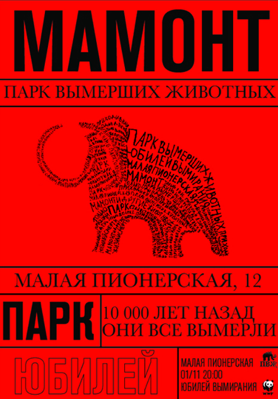
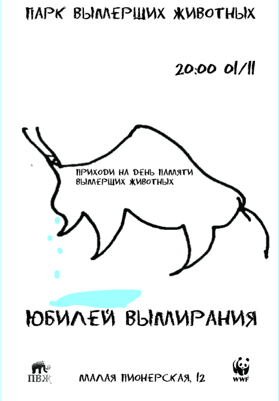
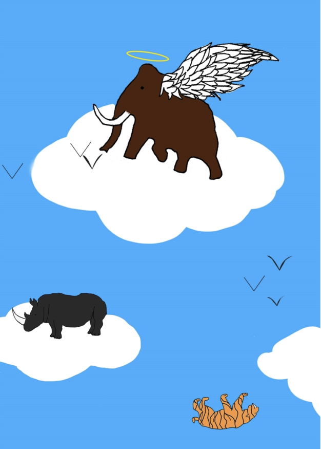

Парк вымерших животных
Выставка
В нашем парке проходит две выставки: плакаты, и веб-постеры. Вы сможете путешествовать по выставке, двигая ползунок снизу. При нажатии на кнопку рисовать, вы сможете перейти на раздел сайта, где можно рисовать.
Серия №1
Первая серия плакатов посвещена вымершим животным. Животные выведены перьевой ручой. Каждое животное заключает в себе ключевые слова.

Серия №2
Вторая серия плакатов посвещена вымирающим животным. Животные нарисованы углем, а затем оцифрованы.
Серия №3
Третья серия плакатов посвещена мероприятиям проведенным в Парке вымерших животных. Шрифт сделан специально для плаката.
Серия №4
Четвертая серия плакатов посвещена вымершим животным. Животные выведены углем на подобии наскальной живописи.

Серия №5
Пятая серия плакатов посвещена проблеме вымирания животных. Буквы специально удлиненны и составляют единное дерево.
Серия №6
Шестая серия плакатов посвещена вымирающим животным. Выполнена с помощью придания животным эффекта свечения в темноте.

Веб-плакаты
Веб-плакат №1
Веб-плакат посвещен проблеме вымирания животных. Сделан в сочетании с ручной графикой. Плакат можно прокручивать вверх и вниз. Существует линия хронологии, которая показывает когда вымерли те или инные животные.
Веб-плакат №2
Веб-плакат рассказывает о проблеме вымирания животных. Выполнен с помощью векторной графики. При нажатии на облака на облаках появляються животные и затем их можно сбросить с этих же облаков.
